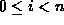

Data Structures and Algorithms
with Object-Oriented Design Patterns in Java
Data Structures and Algorithms
with Object-Oriented Design Patterns in Java


The Graph interface declares the following
accessor and mutator methods:
- getNumberOfEdges
-
This method returns the number of edges contained by the graph.
- getNumberOfVertices
-
This method returns the number of vertices contained by the graph.
- isDirected
-
This boolean-valued method returns true if the
graph is a directed graph.
- addVertex
-
This method inserts a vertex into a graph.
All the vertices contained in a given graph must have
a unique vertex number.
Furthermore, if a graph contains n vertices,
those vertices shall be numbered 0, 1, ..., n-1.
Therefore, the next vertex inserted into the graph shall
have the number n.
- getVertex
-
This method takes an integer, say i where ,
and returns the
 vertex contained in the graph.
vertex contained in the graph.
- addEdge
-
This method inserts an edge into a graph.
If the graph contains n vertices,
both arguments must fall in the interval [0,n-1].
- isEdge
-
This boolean-valued method takes two integer arguments.
It returns true if the graph contains an edge
that connects the corresponding vertices.
- getEdge
-
This method takes two integer arguments.
It returns the edge instance (if it exists)
that connects the corresponding vertices.
The behavior of this method is undefined when the edge
does not exist.
(An implementation will typically throw an exception).
- isCyclic
-
This boolean-valued method returns true
if the graph is cyclic.
- isConnected
-
This boolean-valued method returns true
if the graph is connected.
Connectedness of graphs is discussed in Section
 .
.
 Copyright © 1998 by Bruno R. Preiss, P.Eng. All rights reserved.
Copyright © 1998 by Bruno R. Preiss, P.Eng. All rights reserved.